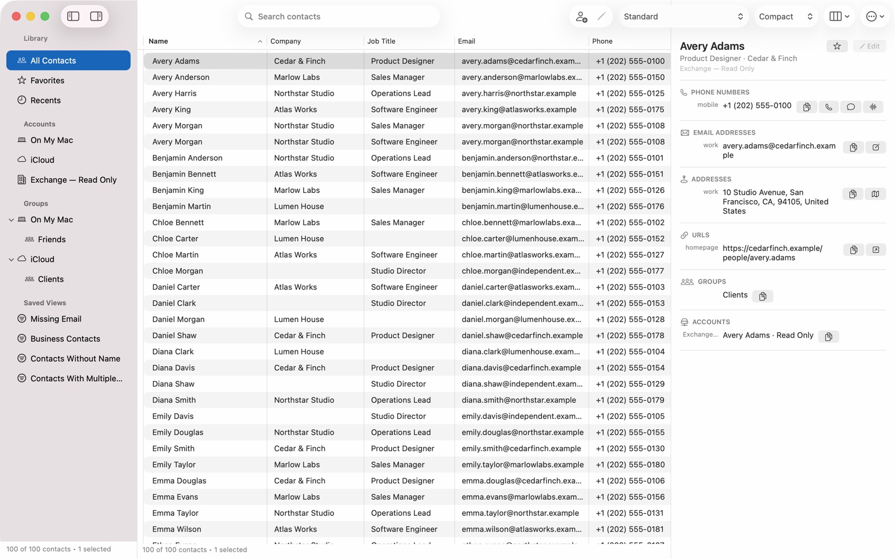
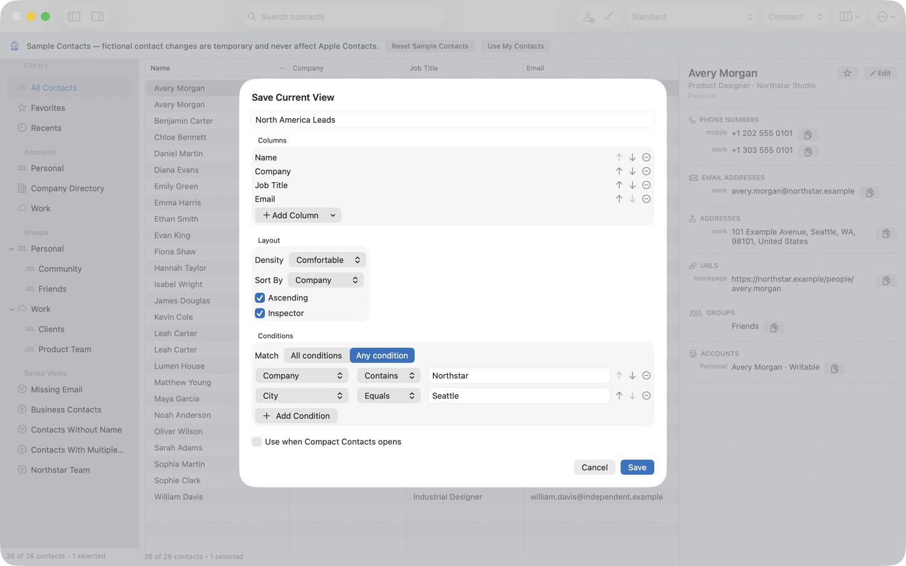
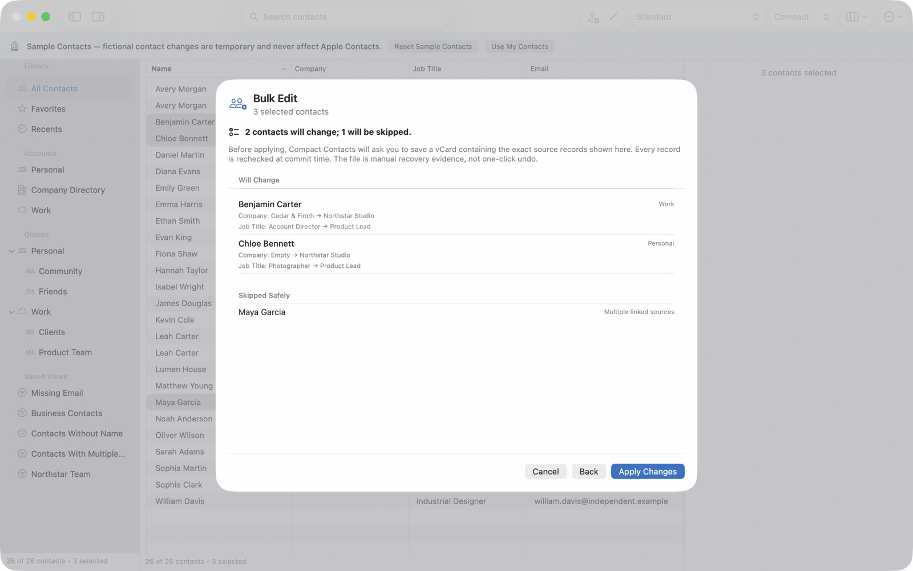

See more at once
Use a dense, resizable table with sortable columns and adjustable row density instead of opening one person at a time.
A native workspace for Apple Contacts
Scan a dense table, search across fields, save the views you use, and make careful updates. Compact Contacts works with the contacts already on your Mac—no new account or contact cloud.

Your Mac stays in charge of sync.
Less opening. More seeing.
Compact Contacts keeps the system Contacts database as the source of truth, then adds a faster way to inspect and organize it.
Use a dense, resizable table with sortable columns and adjustable row density instead of opening one person at a time.
Find people locally across names, organizations, email addresses, phone numbers, postal addresses, and groups.
Choose the columns, sorting, density, and details layout that match the way you work.
Combine multiple ALL or ANY conditions, then save the filter and layout as a reusable Saved View.
Review organization, department, or job-title changes before applying them, including clear explanations for skipped contacts.
Inspect potential matches on demand. Exact-copy removal is narrowly constrained, recovery-first, and never runs automatically.
Saved Views
Build a view for business contacts, missing email addresses, a particular group, or the fields you check every day. Saved Views remember your conditions and table layout while your contact cards remain in the macOS Contacts database.

Previewed Bulk Edit
Select several contacts and preview an update to organization, department, or job title. Compact Contacts identifies eligible records, explains skips, and requires recovery preparation for real contacts.

Private by design
Contact content and search stay on your Mac. Compact Contacts has no developer-operated contact backend, third-party analytics, advertising, or tracking.
Read the privacy policyGood to know
No. macOS and your configured providers continue to handle synchronization. Compact Contacts gives you a better workspace for the records already on the Mac.
No. The system Contacts database remains the source of truth. There is no Compact Contacts login, cloud, or subscription.
Yes. A clearly labeled Sample Contacts workspace uses fictional, temporary data and never changes the macOS Contacts database.
macOS 15 or later. The app supports English and Turkish and is sold as a one-time Mac App Store purchase.
Compact Contacts for Mac